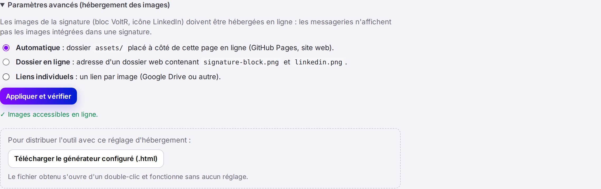
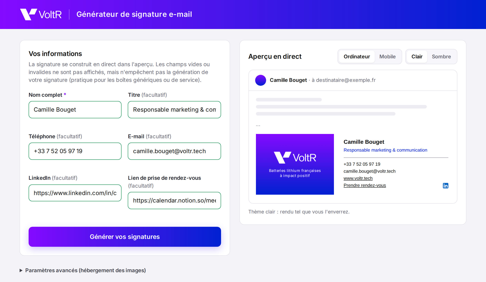

Générateur de signature e-mail VoltR · Tuto 1
Environ 15 minutes · gratuit · aucune connaissance technique requise
https://votre-identifiant.github.io/signature-voltr/VoltR-signature-projet.zip et Chrome ou Edge.https://github.com/signup.https://identifiant.github.io/…). Préférez le nom de la société, en minuscules et sans espace.signature-voltr (minuscules, avec un tiret). Ce nom fera aussi partie de l'adresse.VoltR-signature-projet.zip : double-clic sur Mac, clic droit › Extraire tout… sur Windows. Vous obtenez un dossier VoltR-signature-projet.VoltR-signature-projet, sélectionnez tout son contenu (Ctrl+A sur Windows, ⌘+A sur Mac) et glissez-le dans la zone de la page GitHub. Le contenu comprend index.html, README.md et les dossiers assets, brand, docs et tools.index.html et le dossier assets doivent apparaître directement dans la liste, et non à l'intérieur d'un dossier VoltR-signature-projet. Si c'est le cas, vous avez glissé le dossier au lieu de son contenu. Supprimez le dépôt (Settings › tout en bas Delete this repository) et recommencez les étapes 2 et 3.https://votre-identifiant.github.io/signature-voltr/ affiche le générateur.https://votre-identifiant.github.io/signature-voltr/assets/signature-block.png affiche le bloc violet VoltR.
Deux possibilités, que vous pouvez combiner :
| Méthode | Comment |
|---|---|
| A · Le lien web (recommandé) | Envoyez simplement l'adresse https://votre-identifiant.github.io/signature-voltr/. Chaque personne l'ouvre, remplit ses informations, clique sur Générer vos signatures et suit le guide de sa messagerie. |
| B · Un fichier hors ligne | Sur votre site : Paramètres avancés › Télécharger le générateur configuré (.html). Le fichier Generateur-signature-VoltR.html s'ouvre d'un double-clic et utilise les images de votre site. Vous pouvez l'envoyer par e-mail. |

| Besoin | Comment faire |
|---|---|
| Remplacer une image (ex. nouveau logo) | Dans le dépôt, ouvrez le dossier assets › Add file › Upload files. Déposez le nouveau fichier avec exactement le même nom (signature-block.png ou linkedin.png) › Commit changes. Toutes les signatures existantes se mettent à jour, car l'adresse ne change pas. Taille attendue : 448 × 350 px pour le bloc, 48 × 48 px pour l'icône. |
| Modifier un fichier | Cliquez sur le fichier dans le dépôt › icône crayon (Edit) › modifiez › Commit changes. La mise en ligne se fait automatiquement en 1 à 2 minutes. |
| À éviter absolument | Renommer le dépôt, changer d'identifiant GitHub, repasser le dépôt en privé ou supprimer le dossier assets. Chacune de ces actions change ou coupe l'adresse des images et casse les signatures déjà installées. |
| Symptôme | Solution |
|---|---|
| Erreur 404 juste après l'activation | Patientez 5 minutes : la première publication peut être lente. |
Le menu Branch ne propose pas main | Les fichiers n'ont pas été enregistrés : refaites l'étape 3, jusqu'au bouton Commit changes. |
| GitHub demande un abonnement pour Pages | Le dépôt est privé : Settings › General › tout en bas Change visibility › Public. |
| Le logo n'apparaît pas dans un e-mail reçu | Beaucoup de messageries (Outlook notamment) bloquent les images tant que le destinataire n'a pas cliqué sur « Télécharger les images ». C'est normal : vérifiez avec une autre adresse. |